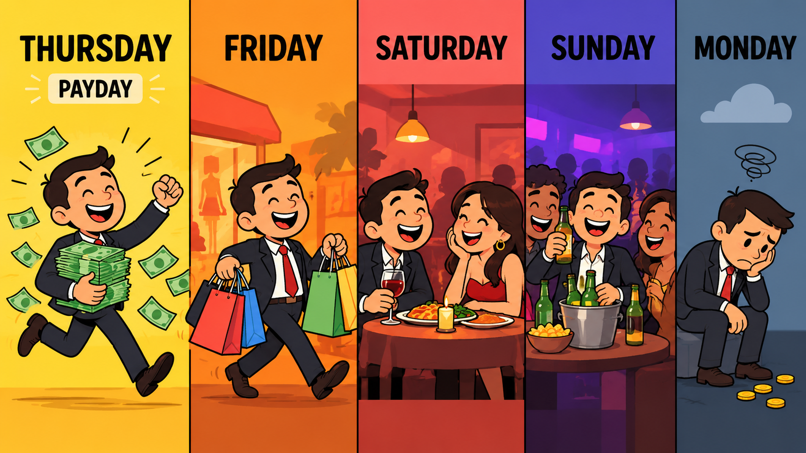

6 Signs of Financial Illiteracy You Shouldn't Ignore

Schools don't teach economic literacy, yet it’s one of the most powerful tools for achieving financial freedom.Why Economic Literacy Matters More Than Ever
You may be thinking, “As long as I earn money, I should be good”. Unfortunately, it's not just about earning money: it’s about understanding how money works and making it work for you.
The household debt-to-income ratio in South Africa reached 62.0% by the end of 2024, which means a substantial portion of disposable income goes to debt repayments. _ Source
In Mzansi, a car is a symbol of achievement. If you don't have one, you rely on public transport, which is often seen as an option for those who don’t own a car.
Those who earn even more spend millions on expensive cars, and some even own more than 5. The car becomes the trophy, even when it quietly drains financial freedom.
This cycle of buying cars, taking on debt, and spending future money on bad investments clearly indicates economic illiteracy, trapping individuals in a perpetual state of financial vulnerability.
WesBank reports that traditional vehicle finance in South Africa is under strain due to high costs and declining credit quality. _ Source
Furthermore, between 5,000 and 7,000 cars are repossessed every month in South Africa, highlighting the severity of over-indebtedness in this sector. _ Source
Watch for the following six signs in your money habits; recognising them can help you take small, manageable steps toward financial stability.
1. Living Beyond Your Means
You’re consistently spending more than you earn to maintain a lifestyle that looks successful but is built on debt. This includes frequent impulse purchases, excessive dining out, or upgrading gadgets annually.
Understanding the Pattern: Spending more than one earns creates a gap between income and expenses. If borrowing regularly fills that gap, debt repayments and interest can place further pressure on future income.
A budget records income and planned expenses, while spending records show where money actually goes; a budget shows how income is planned to cover expenses.
2. Sacrificing Tomorrow for Today
You have no emergency fund, minimal retirement savings, or you’re neglecting investments for long-term growth. One crisis, a medical emergency, a job loss, a car breakdown, and your entire life collapses.
Understanding the Pattern: Saving plays an important role in preparing for unexpected expenses and future needs. An emergency fund, regular savings and learning about investment options such as unit trusts and ETFs are part of understanding financial preparedness. Compound growth shows how even small amounts can grow over time.
3. Not Understanding the True Cost of Money
You may not grasp how interest rates, fees, and inflation erode your purchasing power and increase the actual cost of borrowing. This is especially true with high-interest personal loans and vehicle finance, where total repayments can far exceed the initial amount borrowed.
Understanding the Pattern: Interest and fees increase borrowing costs. An example is a balloon payment. Many like the idea of a balloon payment because it lowers monthly instalments, but the truth is it leaves a large lump-sum payment and doesn’t necessarily make the loan cheaper. Understanding loan terms and repayment priorities helps clarify the true cost.
4. Ignoring Financial Planning
You lack clear financial goals, a roadmap for achieving them, or a contingency plan for unexpected life events. This leads to reactive financial decisions. It’s like sailing without a compass, hoping you’ll somehow arrive at your destination.
Understanding the Pattern: SMART (Specific, Measurable, Achievable, Relevant, Time-bound) goals give financial planning a clear direction. A financial plan outlines how you will achieve these goals, including budgeting, saving, investing, and debt repayment strategies. Regular reviews and adjustments keep the plan relevant as circumstances change.
5. Blindly Following Trends
Many are guilty of this one. Making significant financial decisions based on societal pressure, peer influence, or marketing hype, rather than your personal financial situation. The South African car ownership narrative is a prime example, where people often see it as a success rather than a depreciating asset with substantial ongoing costs.
Understanding the Pattern: If we could all think independently about our own financial circumstances, we might feel less pressure to follow trends or even keep up with others. Questioning societal norms and marketing messages helps shift the focus towards your own financial well-being, rather than keeping up with others.
6. Neglecting Financial Education
You may think financial matters are too complex or boring to learn, or that someone else will manage them for you, but this leaves you vulnerable to exploitation and poor decisions.
Understanding the Pattern: Continuous financial learning can begin with free online resources, local workshops, or beginner-friendly books. This ongoing journey can support more informed money decisions and build confidence over time.
You could start with one area to focus on this week and take a concrete step towards improvement. Whether it's setting up a budget, automating a small savings, or researching a new investment, every step counts. Financial freedom is a journey, and it starts with education.